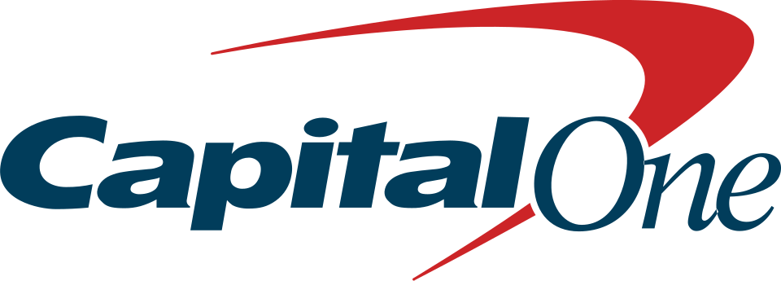

캐피털 원 Capital One
캐피털 원(Capital One)은 신용카드, 자동차 대출, 은행 및 저축 계좌를 전문으로 하며 소비자 금융과 상업 금융을 함께 운영하는 미국 은행 지주 회사이다.
최종 업데이트

캐피털 원은 어떤 브랜드인가
캐피털 원은 정식 명칭이 Capital One Financial Corporation인 미국 은행 지주 회사이다. 사업은 신용카드, 소비자 금융, 상업 금융의 세 부문으로 구성한다.
신용카드 발급과 자동차 대출, 은행 및 저축 계좌를 중심으로 개인과 기업 대상 금융 서비스를 운영한다. 미국을 중심으로 캐나다와 영국에서도 사업을 운영하며 카페 스타일 지점과 일반 지점, ATM을 통해 고객 접점을 구성한다.
2022년 12월 31일 총자산 기준 미국 12위 은행이자 Visa 및 Mastercard 신용카드 발급사 중 3위이며, 미국의 주요 자동차 금융 회사 가운데 하나이다.
캐피털 원은 어떻게 시작되고 성장했나
캐피털 원은 1994년 7월 21일 Richard Fairbank가 설립했다. 설립 뒤인 1990년대에는 신용카드 대량 마케팅을 개척하는 데 기여하며 신용카드 사업의 기반을 넓혔다.
이후 신용카드에서 자동차 대출, 은행 및 저축 계좌, 소비자 금융과 상업 금융으로 사업을 확장했고 미국을 중심으로 캐나다와 영국에서도 운영하는 은행 지주 회사로 성장했다. 2022년 12월 31일에는 총자산 기준 미국 12위 은행이자 Visa 및 Mastercard 신용카드 발급사 중 3위를 기록했다.
캐피털 원의 브랜드 아이덴티티는 무엇인가
1990년대 신용카드 대량 마케팅의 확산에 기여했고 신용카드·자동차 대출·은행 서비스를 세 금융 부문으로 운영하는 점이 특징이다.
캐피털 원의 대표 제품과 서비스는 무엇인가
캐피털 원의 사업은 신용카드, 소비자 금융, 상업 금융의 세 부문으로 구성한다. 신용카드 발급과 자동차 대출을 제공하고 일반 은행 계좌와 저축 계좌를 운영하며 개인 및 기업 고객을 대상으로 금융 서비스를 제공한다.
2022년 12월 31일 기준 대출금 규모는 신용카드 1,140억 달러, 자동차 대출 750억 달러, 상업 대출 850억 달러를 기록했다. 고객 접점으로는 카페 스타일 지점 30개와 ATM 2,000개를 포함한 약 750개 지점을 운영한다.
캐피털 원은 지금 어떤 상태인가
캐피털 원은 버지니아주 타이슨스에 본사를 두고 미국을 중심으로 캐나다와 영국에서 사업을 운영한다. 2022년 12월 31일 총자산 기준 미국 12위 은행이며 Visa 및 Mastercard 신용카드 발급사 중 3위를 기록했다.
약 750개 지점과 ATM 2,000개를 운영하며 미국의 주요 자동차 금융 회사 가운데 하나이다.
캐피털 원 로고는 어떻게 변해왔나
자주 묻는 질문
캐피털 원는 어느 나라 브랜드인가요?
캐피털 원는 미국의 금융 브랜드입니다.
캐피털 원는 언제 설립되었나요?
캐피털 원는 1994년 설립되었습니다.
캐피털 원의 브랜드 아이덴티티는 무엇인가요?
1990년대 신용카드 대량 마케팅의 확산에 기여했고 신용카드·자동차 대출·은행 서비스를 세 금융 부문으로 운영하는 점이 특징이다.
캐피털 원의 대표 제품은 무엇인가요?
캐피털 원의 사업은 신용카드, 소비자 금융, 상업 금융의 세 부문으로 구성한다.
캐피털 원는 현재 어떤 상태인가요?
캐피털 원은 버지니아주 타이슨스에 본사를 두고 미국을 중심으로 캐나다와 영국에서 사업을 운영한다.
캐피털 원의 창업자는 누구인가요?
캐피털 원의 창업자는 Richard Fairbank입니다(위키데이터 기준).
캐피털 원의 본사는 어디에 있나요?
캐피털 원의 본사는 매클레인에 있습니다(위키데이터 기준).
출처와 검증
캐피털 원 관련 참고: 공식 웹사이트 · 위키데이터 Q1034654 · 한국어 위키백과 · 영어 위키백과. 브랜드명은 한글과 원어를 함께 표기하되 데이터에 없는 표기는 만들지 않습니다. 기원 국가·설립연도는 검수된 정의문에서 확인된 값을 우선하고, 없을 때만 공식 웹사이트 URL이 일치하는 위키데이터 개체의 값을 씁니다. 탄생일의 월·일은 위키데이터, 위키백과 정보상자, 본문 가운데 같은 연월로 확인되는 값만 싣고, 출처끼리 다르면 싣지 않습니다. 웹 첫 보관은 인터넷 아카이브가 공식 사이트 첫 화면을 처음 보관한 날로, 사이트 개설일과 다를 수 있습니다. 연 매출은 미국 증권거래위원회(SEC)에 제출된 연차 보고서(10-K)의 XBRL 값이며 달러 금액을 반올림했습니다. 위키데이터 값은 2026-09-12 기준입니다.